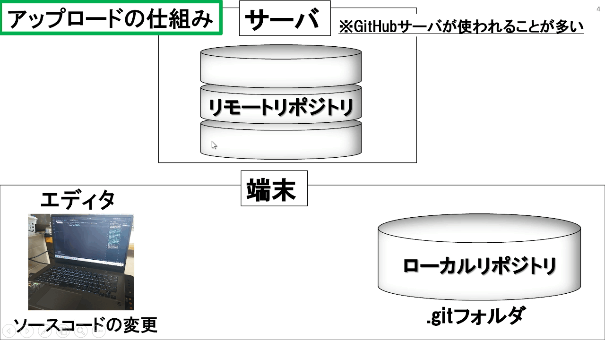
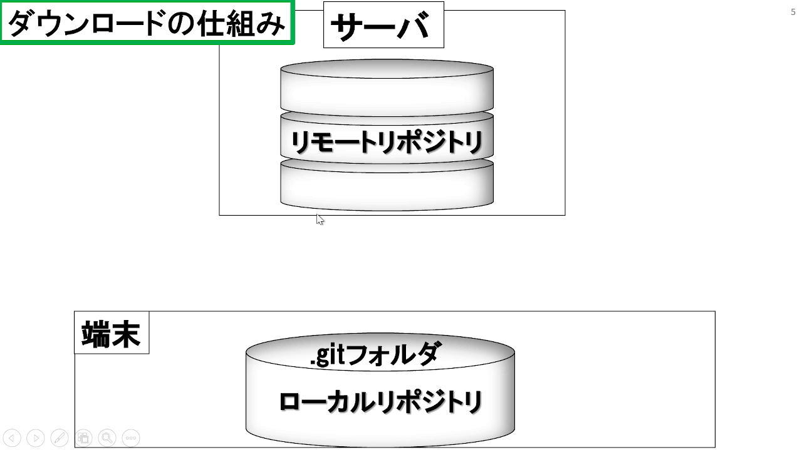

用語
| 用語 | 説明 |
|---|---|
| Git | 分散型バージョン管理システム |
| GitHub | Git を利用したWebアプリケーション |
gitコマンドの使い方
設定
ユーザ登録
git config --global user.name [名前]
git config --global user.email [メールアドレス]- Windows
-
git config --list | findstr "user.name" git config --list | findstr "user.email" - Linux
-
git config --list | grep "user.name" git config --list | grep "user.email"
Alias設定
git config --global alias.[新たに設定したいコマンド名] [gitコマンド]git [新たに設定したいコマンド名]を打つとgit [gitコマンド]が実行される
ローカルリポジトリの状態を確認する
git statusログの確認
git log
git log - [確認したいログの数]リポジトリ操作
リポジトリの設定
git init- .gitという隠しフォルダが生成される(このディレクトリ内での作業が可能になる)
git remote add origin [リポジトリのURL]git branch -M mainアップロード

git add [ファイル名, ディレクトリ名, -A:全て]git commit -m "コメント"git push -u origin main // 初回のみ (競合解決)
git push
git push -f //強制push-
-u: --set-upstream - ローカルブランチの上流が [ブランチ名] へ移る
ダウンロード

- リモートリポジトリ上の全てのファイルがダウンロードされる
git clone [リポジトリのURL]- 更新されているリモートリポジトリのファイルをローカルリポジトリにダウンロード
git pull origin [ブランチ名] // 初回のみ
git pullファイル復元
git restore [ファイル名, ディレクトリ名]ステージングエリアに保管されているファイルの取り消し
git restore --staged [取り消したいファイル・フォルダ名]プッシュを取り消す
git reset --hard [取り消すプッシュの直前のコミットハッシュ値] [取り消すプッシュの直前のコミットハッシュ値] : git logで確認
ブランチ操作
ブランチ確認
git branch -aブランチ作成・移動
git switch -c [新しいブランチ名, 移動先ブランチ名]ブランチの移動
git switch [切り替え先のブランチ名]ブランチ合成
git merge [併合したいブランチ]
git merge --allow-unrelated-histories //履歴の異なるブランチを合成することを許可する[併合したいブランチ]が合成される
ブランチ名変更
git branch -m [元のブランチ名] [変更したブランチ名]ブランチのマージ
- 1. 併合先のブランチへ移動
-
git switch [併合先ブランチ] - 2. ブランチを併合
-
git merge --allow-unrelated-histories [併合元のブランチ] - 3. 混乱しないように、併合元のブランチを削除(推奨)
ローカルブランチ削除
git branch -d [削除したいブランチ] // 変更をマージした後実行可能
git branch -D [過去の変更まで完全削除したいブランチ]リモートリポジトリのブランチを削除
git push origin --delete [削除したいブランチ名]マージの取り消し
git merge --abortGitの更新
- Windows
-
git update-git-for-windows
Reference
Git インストール方法
GitHub アカウント作成方法